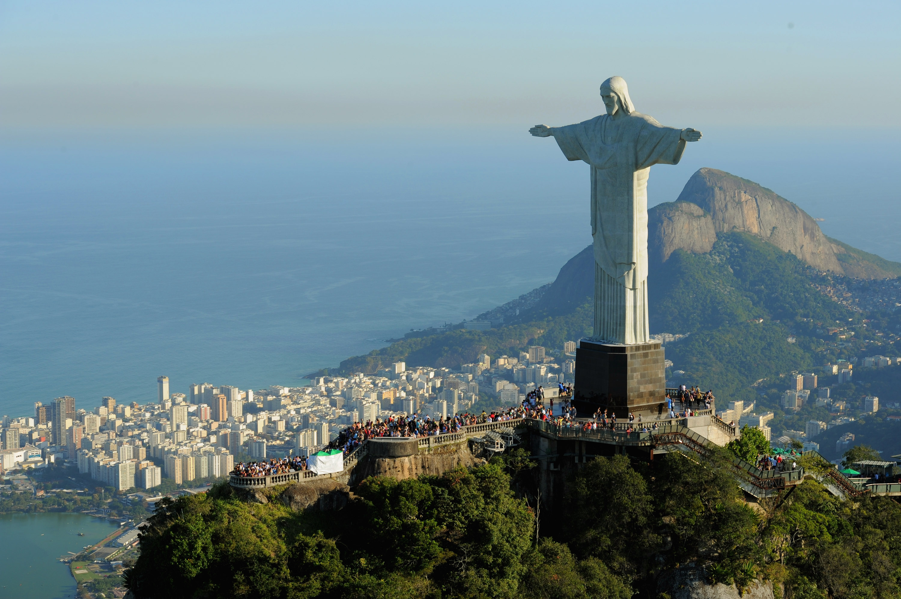

Antonio Montini
IL CRISTO REDENTORE

| Informazioni | |
|---|---|
| Autori |
|
| Data | 1931 |
| Ubicazione | Rio de Janeiro (Brasile) |
Il Cristo Redentore è una statua in stile Art Déco rappresentante Gesù Cristo. La statua trova collocazione sulla cima della montagna del Corcovado, che si erge a 700 m sul livello del mare a picco sulla città e sulla baia di Rio de Janeiro, è alta 38 metri, di cui 8 metri fanno parte del basamento.
La statua, fatta di calcestruzzo e pietra saponaria e costruita fra il 1922 e il 1931, è un simbolo della città e del Brasile e rappresenta il Cristo Redentore dell'umanità. È stato inserito nel 2007 fra le sette meraviglie del mondo moderno. Ai piedi della statua è posta una targa messa dalla comunità italiana nel 1974 (in occasione del centenario della nascita di Guglielmo Marconi) per commemorare l'accensione delle lampade della statua tramite un impulso radio da Roma da parte dello scienziato italiano il 12 ottobre 1931.
Per sapere di più cliccare il bottone seguente.
La statua, fatta di calcestruzzo e pietra saponaria e costruita fra il 1922 e il 1931, è un simbolo della città e del Brasile e rappresenta il Cristo Redentore dell'umanità. È stato inserito nel 2007 fra le sette meraviglie del mondo moderno. Ai piedi della statua è posta una targa messa dalla comunità italiana nel 1974 (in occasione del centenario della nascita di Guglielmo Marconi) per commemorare l'accensione delle lampade della statua tramite un impulso radio da Roma da parte dello scienziato italiano il 12 ottobre 1931.
Per sapere di più cliccare il bottone seguente.